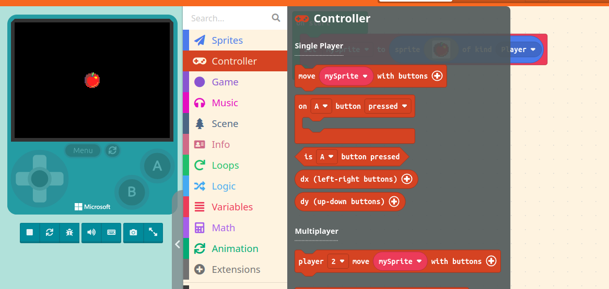

Player Sprites
Overview
The first step to creating a game is to have a player character. In this section, we will go over a few topics. By the end of this section, you will be able to create a player sprite.
For the purposes of this documentation, we'll be going over the tutorial in raw Javascript code. To get to the code view of your project, click on the button that says 'Javascript' at the top of the screen. You should now see a mostly blank screen, with a '1.'
Step 1: Creating a player sprite
Sprites are what MakeCode Arcade uses to refer to entities, or characters in the engine. We'll start with creating a sprite of the player type.
- Click on the 'Sprites' section of the code block menu. The tutorial should have showed you where this is, when you made an account. You'll see a few subsections. The 'Create' one should be at the top, alongside the code block that says 'sprite img of kind kind.'
- Click and drag that out of the menu, and you'll have the block.
-
Drag the block into the blank area. You can let go of the block, and you'll know it was added correctly if the code below appears.
let mySprite = sprites.create(img` . . . . . . . . . . . . . . . . . . . . . . . . . . . . . . . . . . . . . . . . . . . . . . . . . . . . . . . . . . . . . . . . . . . . . . . . . . . . . . . . . . . . . . . . . . . . . . . . . . . . . . . . . . . . . . . . . . . . . . . . . . . . . . . . . . . . . . . . . . . . . . . . . . . . . . . . . . . . . . . . . . . . . . . . . . . . . . . . . . . . . . . . . . . . . . . . . . . . . . . . . . . . . . . . . . . . . . . . . . . . . . . . . . . . . . . . . . . . . . . . . . . . . . . . . . . . . . . . `, SpriteKind.Player)Info
If you put in code incorrectly, you can delete it by highlighting with your mouse and hitting backspace. Or, you can hit ctrl+z to undo your last move, as well as shift+ctrl+z to redo your last move.
-
Copy and paste the code below in place of your empty sprite code. This will stop the player sprite from being blank, and you'll see a small apple in the game window.
let mySprite = sprites.create(img`
. . . . . . . e c 7 . . . . . .
. . . . e e e c 7 7 e e . . . .
. . c e e e e c 7 e 2 2 e e . .
. c e e e e e c 6 e e 2 2 2 e .
. c e e e 2 e c c 2 4 5 4 2 e .
c e e e 2 2 2 2 2 2 4 5 5 2 2 e
c e e 2 2 2 2 2 2 2 2 4 4 2 2 e
c e e 2 2 2 2 2 2 2 2 2 2 2 2 e
c e e 2 2 2 2 2 2 2 2 2 2 2 2 e
c e e 2 2 2 2 2 2 2 2 2 2 2 2 e
c e e 2 2 2 2 2 2 2 2 2 2 4 2 e
. e e e 2 2 2 2 2 2 2 2 2 4 e .
. 2 e e 2 2 2 2 2 2 2 2 4 2 e .
. . 2 e e 2 2 2 2 2 4 4 2 e . .
. . . 2 2 e e 4 4 4 2 e e . . .
. . . . . 2 2 e e e e . . . . .
`, SpriteKind.Player)
Info
The reason this code uses numbers and letters to show what the sprite looks like is because we can't put an image directly into our code. So the editor uses specific numbers and letters to signify each colour, so every letter and number is really a coloured pixel in your sprite!
Step 2: Setting up a camera
Now that we have our player sprite, and you'll find it doesn't move. Before setting up controls, you'll want a camera that follows your sprite around. If we don't have a camera, the sprite will be able to move off screen entirely.
-
Navigate to the 'scene' section of the code blocks, then find the 'camera' subsection. Select the block that says 'camera follow sprite mysprite.'

-
Click and drag this block out of the menu into your code field. The code that appears should look like this.
scene.cameraFollowSprite(mySprite)
Conclusion
After completing this section, you'll have the following:
- A player sprite with unique sprite art.
- A camera that will follow your player sprite around.
You can now move on to the next section, Enemies. Nice work!